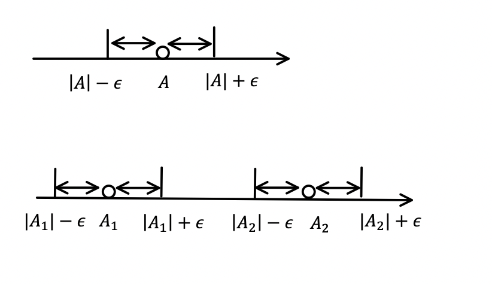

最近想着有空的时候把数学捡起来
这篇博文写了分析学中的集合论
先从分析学开始吧
集合论一些结论的证明
solution1
X×Y=∅⟺(X=∅)∨(Y=∅)
proof
∅=(x∈X)∧(x∈CMX){(x∈X)∧(y∈Y)=(x∈X)∧(x∈CMX)(x∈X)∧(y∈Y)=(y∈Y)∧(y∈CMY)
⇒(x∈X)∧(y∈Y)=(x∈CMX)∧(y∈CMY){X=CMXY=CMY⇒(x=∅)∨(y=∅)
另一方面
(X=∅)∨(Y=∅)⇒∀(x,y), (x∈CMX)∨(y∈CMY)
⇒∀(x,y), x∈CM(X×Y)⇒∀(x,y), x∈/X×Y
X,Y 任意, 所以X×Y=∅
solution2
(A×B)⊂(X×Y)⟺(A⊂X)∧(B⊂Y)
proof
Let P=(x∈A)∧(y∈B), Q=(x∈X)∧(y∈Y)P⇒Q⟺(¬p∨Q)
1)
(¬p)∨((x∈X)∧(y∈Y))⟺(¬p∨(x∈X))∧(¬p∨(y∈Y))⟺(p⇒(x∈X))∧(p⇒(y∈Y))
x∈A⇒x∈X⟺(A⊂X)y∈B⇒y∈Y⟺(B⊂Y)
2)
根据命题等价性, 右边推左边也同理
solution3
(X×Y)∪(Z×Y)=(X∪Z)×Y
∀x∈X,∀y∈Y,∀z∈Z, (x∈X)∨(y∈Y)∨(z∈Z)∨(y∈Y) ⟺{(x,z)∣(x∈X)∨(z∈Z)}∪Y⟺(X∪Z)×Y
solution4
(X×Y)∩(X′×Y′)=(X∩X′)×(Y∩Y′)
不妨假设
u∈(X∩X′), v∈(Y∩Y′)
{(u,v)∣(u∈(X∩X′))∧(v∈(Y∩Y′))} ⟺{(u,v)∣(u∈X)∧(u∈X′)∧(v∈Y)∧(v∈Y′)} ⟺{(u,v)∣[(u∈x)∧(v∈Y)] ∧ [(u∈X′)∧(v∈Y′)]}
令A=X×Y, B=X′×Y′
{(u,v)∣(u∈X)∧(v∈Y)}⇒{p∣p∈A} {(u,v)∣(u∈X′)∧(v∈Y′)}⇒{p∣p∈B} ⟺{p∣(p∈A)∧(p∈B)}⟺A∩B⟺(X×Y)∩(X′×Y′)
solution5 反对称性
SΔT=(S\T)∪(T\S) S\T=S∪(¬T),T\S=T∪(¬S) (S∪T)∪(¬T∪¬S)=(S∪T)∪(¬(S∩T)) =(S∪T)\(S∩T)
函数的表示
solution1
(A⊂B)⇒(f(A)⊂f(B))
1)(A⊂B)⇒f(A)⊂f(B)
f(A):={y∈Y∣∃x,(x∈A)∧(y∈f(x))} A⊂B⟺(x∈A⇒x∈B) ⇒{y∈Y∣∃x,(x∈B)∧(y∈f(x))}=f(B)
2) (f(A)⊂f(B))⇒(A⊂B)
{y∈Y∣∃x,(x∈A)}⇒{y∈Y∣∃x,x∈B} ∃x,(x∈A)⟹∃x,(x∈B) ⟺∃x, (x∈A)∧(x∈B)
solution2
A=∅⇒f(A)=∅
∃x,x∈A Let x1∈A⇒f(x1)=y1⇔∃y1∈Y ⟺{∃x∣x∈A}⇒{∃y∣f(x)=y}
solution3
f(A∩B)⊂(f(A)∩f(B))
f(A):={y∈Y∣∃x (x∈(A∩B))∧(y∈f(x))} {∃x,x∈(A∩B)∧y∈f(x)}⇒{∃x∣(x∈A)∧(y∈f(x))∧(x∈B)∧(y∈f(x)} ⇒f(A)∩f(B)
solution4
f(A∩B)=f(A)∩f(B)
f(A∩B):={y∈Y∣∃x,(x∈(A∩B)∧(y∈f(x)))} {∃x,y∣((x∈A)∨(x∈B))∧(y∈f(x))} ⟺{∃x,y∣(x∈A∧y∈f(x))∨(x∈B∧y∈f(x))} ⟺f(A)∪f(B)
solution5
A′⊂B′⇒f−1(A′)⊂f−1(B′)
需要用到定义
f−1(B)={x∈X∣f(x)∈B}
A′⊂B′⟺f(x)∈A′⇒f(x)∈B′⟺{x∈X∣f(x)∈A′}⇒{x∈X∣f(x)∈B′} f−1(A)⊂f−1(B)
solution6
f−1(A′∩B′)=f−1(A′)∩f−1(B′)
{x∈X∣(f(x)∈A′)∧(f(x)∈B′)} ⇔{x∈X∣f(x)∈A′}∩{x∈X∣f(x)∈B′} ⟺f−1(A′)∩f−1(B′)
solution7
f−1(A′∪B′)=f−1(A′)∪f−1(B′)
同理可证
solution8
f−1(A/B)=f−1(A)/f−1(B)
{x∈X∣(f(x)∈A)∧(f(x)∈/B)}⟺{x∈X∣f(x)∈A}∩{x∈X∣f′(x)∈/B} ⇔f−1(A)/f−1(B)
solution9
f−1(CYA)=CXf−1(A)
CXf−1(A)=X−{x∈X∣f(x)∈A} ={x∈X∣f(x)∈/A}={x∈X∣f(x)∈CYA}=f−1(CYA)
solution10
∀A, A⊂X∀B, B⊂Y
有f−1(f(A))⊃A
需要用到的很重要的结论是
f(A)={y∈Y∣∃x,(x∈A)∧(y∈f(x))}
i) x∈A⇒f(x)∈f(A) ii)A⊂X⇒x∈A,x∈X⇒{x∈X∣f(x)∈f(A)}=f−1(f(x))let M={x∈X∣f(x)∈f(A)}
⟺{x∈A⇒x∈M}⇒A⊂M⟺f−1(f(A))⊃A
solution11
f(f−1(B))⊂B
M=f−1(B)={x∈X∣f(x)∈B} f(M)={y∈Y,∃x∣(x∈M)∧(y∈f(x))} ⇒f(M)={y∈Y,∃x∈X ∣ (f(x)∈B)∧(y∈f(x))}
所以存在这样的一个x
∃xi,f(xi)∈B ⇔{y∈Y∣(f(x)∈B)∧(y∈f(x))}⊂B ⟺f(f−1(B))⊂B
函数的其他命题（一）
solution1
R1⊂X×Y,R2⊂Y×X 满足
(R1∘R2=Δx)∧(R2∘R1=ΔY)
它们都是函数关系
⎩⎪⎨⎪⎧R1⊂X×YR2⊂Y×X⇒R2∘R1={∃y,(xR1y)∧(yR2x)}=Δy
不妨设R=R2∘R1
⎩⎪⎨⎪⎧xRy1={∃y1,(xR1y1)∧(y1R2x)}=ΔY xRy2={∃y2,(xR1y2)∧(y2R2x)}=ΔY⟺y1=y2
同理可证,R2∘R1为函数关系
solution2
R⊂X2, 传递性等价于R∘R⊂R
i) 根据传递性(aRb)∧(bRc)⇒(aRc)
∃a∈X,∃b∈X, 因为R 是建立在X×X 上的关系
所以有c∈X
ii) 有
R∘R={∃x,(xRx)∧(xRx)}⊂{∀x∣x∈X×X}⊂R ⟺R∘R⊂R
solution3
R′⊂Y×X 和 R⊂X×Y 满足 (yR′x)⇔(xRy),则 R′是 R的转置关系
R⊂X2的反对称性等价于 R∩R′⊂ΔX
∃a∈X,∃b∈X,(aRb)∧(bRa)⇒a=b
因为(bRa)⇔(aR′b)⟺(aRb)∧(aR′b)⇒a=b⟺(R∩R′)X=X 所以有R∩R′⊂ΔX
solution4
当且仅当R∪R′=X2时, 集合X中的任意两个元素由R⊂X2相联系
因为R⊂X2,∀a,b∈X,aRb∈X⇔bR′a∈X 所以(aRb)∪(bR′a)∈X2 ⟺R∪R′=X2
另一方面,R∪R′,显然R⊂X2, R′⊂X2
函数的其他命题（二）
f:X→Y是映射,y∈Y的原像f−1(y)⊂X称为 y上的层
solution1
x1∈X,x2∈X,如果f(x1)=f(x2),认为x1,x2由关系R⊂X2相联系, 并记作x1Rx2,R是等价关系
i), 很显然x1Rx2=x2Rx1 ii) x1Ra:=f(x1)=f(a),aRx2:=f(a)=f(x2) (x1Ra)∧(aRx2)⇒f(x1)=f(a)=f(x2)⇒f(x1)=f(x2) 是等价关系
solution2
i)f:X→Y的层互不相交, 而所有层的并集是整个集合 X
如果X→Y的层相交,f−1(y1)=f−1(y2)=x1 f(x1)=y1f(x1)=y2,与映射定义矛盾
ii)f−1(y1)∪f−1(y2)∪⋯f−1(yn)=x1∪x2∪⋯∪xn=X
映射的性质
solution1
映射 f:X→Y是满射, 当且仅当 ∀B⊂Y,f(f−1(B))=B
a)∀x∈f−1(B),f(x)∈B⊂Y ∀x∈X,f(x)=⋃i=1Bi=Y⟺f(X)=Y
b)∀B⊂Y,f(f−1(B))=B,保证了 f 是满射, 下面证明 f 为单射 ⟺f(x1)=f(x2)⇒x1=x2 不妨设 f(x1)=f(x2)=p∈Y f−1(f(x1))=f−1(p)={x∈A∣f(x)=p}=M1⊂A f−1(f(x2))=f−1(p)=M2⊂A f−1(p)=M1=M2, 即它的层是唯一的 f(x1)=f(x2)⇒x1=x2
solution2
如果 f:X→Y 与 g:Y→X 满足 g∘f=eX,eX 为中性元,
则 g 称为 f 的左逆映射, f 称为 g 的右逆映射, 可能存在多个单侧逆映射
(x1,x2,……,xn…)→fa(a,x1,xn…xn) 注意到 a 的取值可以是任意的
solution3
f:X→Yg:Y→Z 是双射, 映射 g∘f:X→Z 是双射, 并且 (g∘f)−1=f−1∘g−1
i)先证满射性, X→fY→gZ (g∘f)X=Z g∘f为满射
ii)再证单射性, (g∘f)(x1)=(g∘f)(x2)⇒g(f(x1))=g(f(x2)) g为单射, f(x1)=f(x2) f为单射, x1=x2
iii)(f−1∘g−1)∘(g∘f)=f−1∘(g−1∘g)∘f=f−1∘eY∘f =f−1∘f=eX
solution4
对于任何映射 f:X→Y,由x⟼F(x,f(x)) 定义的映射
F:X→X×Y 是单射
f(x1)=f(x2)⇒x1=x2 ∀x1=x2,f(x1)=f(x2)⇒(x1,f(x1))=(x2,f(x2)) F(x1)=F(x2)⇒x1=x2
极限理论基础

极限为A,A 的邻域之外, 有有限个点, 在数学上要注意表示形式
比如, 证明极限的唯一性的时候, 要想证明邻域重合
∀n>N1,x1∈V(A1) ∀n>N2,x2∈V(A2) 不妨设 A1<A2,N1<N2 此时, 使得 A1+ϵ=A2−ϵ ϵ=2A1−A2,更一般地, 让 ϵ=2∣A1−A2∣
solution1
∣A⋅B−xnyn∣⩽∣xn∣(Δyn)+∣yn∣(Δxn)+ΔxnΔyn 构造 3ϵ
⎩⎪⎪⎨⎪⎪⎧Δxn<min(1,3ε)⩽1Δyn<min(1,3ε)⩽1⇒ΔxnΔyn<3ε
{∣xn∣<A+Δxn⩽A+1∣yn∣<B+Δyn⩽B+1⟹∣xn∣Δyn⩽3ϵΔyn⩽min(1,3(A+1)ε)这样所需要的 ϵ 已经构造完毕了
solution2
∣∣∣∣∣BA−ynxn∣∣∣∣∣⩽∣yn∣−Δyn∣xn∣+Δxn−ynxn=∣yn∣2−∣yn∣Δyn∣xn∣∣yn∣+∣yn∣Δxn−∣xn∣∣yn∣+∣xn∣Δyn =yn2∣xn∣Δyn+∣yn∣Δxn1−δ(yn)1,δ(yn)=∣yn∣Δyn
构造证明的第一部分, 已知条件 ∣xn∣<∣A∣+Δxn,∣yn∣>∣B∣−Δyn, 先凑出
1−δ(yn)1<?
Δyn<4∣B∣⟹∣yn∣>∣B∣−Δyn>2∣B∣⟹δ(yn)<21⟹1−δ(yn)1<2
接下来只要证明 yn2∣xn∣Δyn<4ε,yn2∣yn∣Δxn<4ε 即可
i)
∣xn∣<∣A∣+1,yn21<(∣B∣2)2=B24 此时构造出 Δyn<161(∣A∣+1)εB2,Δyn<min{161(∣A∣+1)εB2,4∣B∣}
ii)
yn1<∣B∣2,Δxn⩽8ε∣B∣Δxn⩽min{8ε∣B∣,1}
solution3对于 ∀ϵ>0,可以求出{n,m}>N,使得 ∣xm−xn∣<ϵ
分析中很重要的一点, 集合变小时, 下界不减小, 上界不增大
柯西准则的证明如下
i)基本数列是收敛数列
∣xm−xn∣<∣xm−A∣+∣xn−A∣if∀k>N,∣xk−A∣<2ε⟹∣xm−xn∣<2ε+2ε=ε
ii)收敛数列是基本数列
an:=k⩾ninfxkbn:=k⩾nsupxk an+1:=k⩾n+1infxkbn+1:=k⩾n+1supxk ⇒an⩽an+1⩽bn+1⩽bn 根据闭区间套, [an,bn]有公共点 A
[an,bn],⎩⎪⎨⎪⎧∣A−xk∣⩽bn−anxn−δ⩽k⩾ninfxk=an⩽bn=k⩾nsupxk⩽xn+δ,δ=?
bn−an⩽2δ<ε⇒δ=3ε xn−3ε<xk<xn+3ε ∣A−xk∣<ε
Weierstrass
上确界的表示方式, s=n∈Nsupxn
∀ε>0∃xN∈{xn}s−ε<xN⩽s
⇒∀n>N,s−ε<xN⩽xn⩽s⇒s−ε<xn
∣s−xn∣=s−xn<ε
不减数列有上确界 s=n∈Nsupxn
不增数列有下确界 s=n∈Ninfxn
 微信
微信 支付宝
支付宝